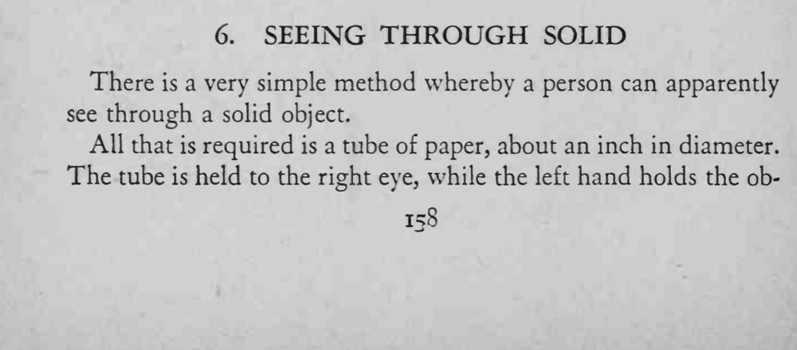
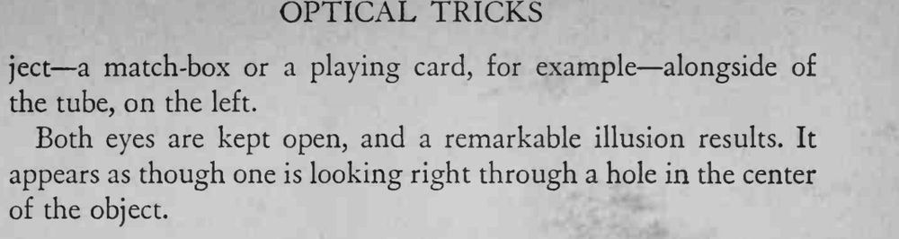

把纸筒贴在右眼上，左眼旁举着火柴盒，两眼同时睁开，竟像透过火柴盒看见东西。
两眼必须同时看，纸筒和物体要贴得够近。


There is a very simple method whereby a person can apparently see through a solid object. All that is required is a tube of paper, about an inch in diameter. The tube is held to the right eye, while the left hand holds the ob- ject a match-box or a playing card, for example alongside of the tube, on the left. Both eyes are kept open, and a remarkable illusion results. It appears as though one is looking right through a hole in the center of the object.